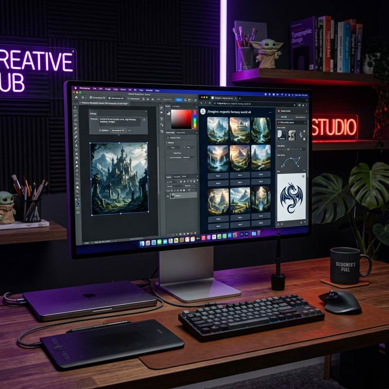
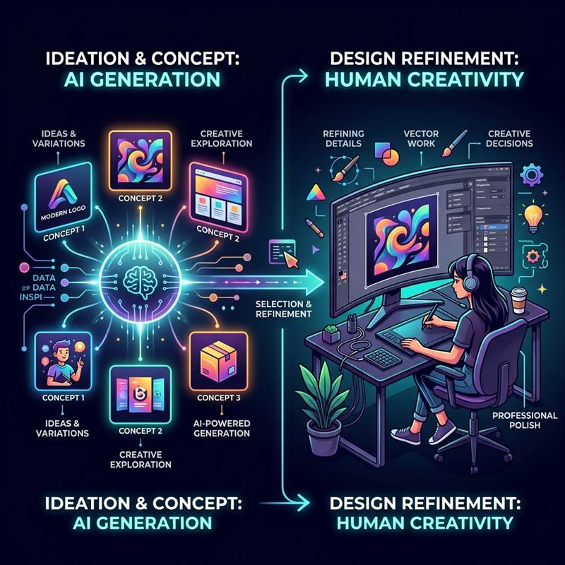

If you're a graphic designer, you've probably already tried Midjourney or Firefly. Maybe you've used them for real projects. AI isn't the future of design anymore—it's Tuesday. But here's the thing: just because you can generate something doesn't mean you should, and it definitely doesn't mean it's good. Let's talk about what's actually changing.
Which AI Tools Are Designers Actually Using?

AI tools are now sitting alongside Photoshop and Illustrator in every professional design workflow.
So which tools are designers actually using? Not the hype tools—the ones they open every single day. Here's the breakdown:
The key thing? AI isn't replacing Photoshop or Illustrator. They're just… sitting inside them now. It's like Photoshop suddenly got smarter, but you still need to know how to design. That part hasn't changed at all.
Is the Quality Actually Good?
Raw AI output? Sometimes amazing. More often: broken text, weird proportions, and images that look like they came from the same generator everyone else is using. But the moment a real designer steps in—refining the prompt, picking the usable bits, fixing the rest—it gets genuinely good. That's where the magic happens.
The quality jump isn't from AI alone. It comes from designers who understand both the craft and the tool. Studios are now actively looking for that combination, and paying more for it.
How Workflows Have Actually Changed

The design process hasn't disappeared; it's shifted. Less manual execution, more creative direction.
Used to be: sketch for an hour, make mood boards, show the client something rough, get feedback, iterate. Now: generate 10 concepts in 20 minutes, pick the best direction, spend the rest of the time making it actually good. It's not less work—it's different work. You stop being the person who executes every pixel and start being the person who knows what direction matters.
What This Means If You're Learning Design
Here's the reality: if you can only type a prompt into Midjourney, you're not a designer—you're just someone who knows how to Google. But if you understand why a layout works, how type affects emotion, what makes a brand feel like itself, and then you use AI as a tool to speed up your thinking? That's when you become dangerous in the best way. That's the person studios hire.
At MAAC Ghaziabad and MAAC Noida Extension, our Graphic Design courses build exactly that foundation: industry-aligned curriculum, experienced faculty, and training on the tools and workflows that employers across Delhi NCR are actively hiring for.
Start Your Graphic Design Career at MAAC
Admissions open for 2026 batch. Talk to our counsellors today.
Ghaziabad, UP - 201001 +91 977 381 9545
Greater Noida West - 201009 +91 7011 098 633